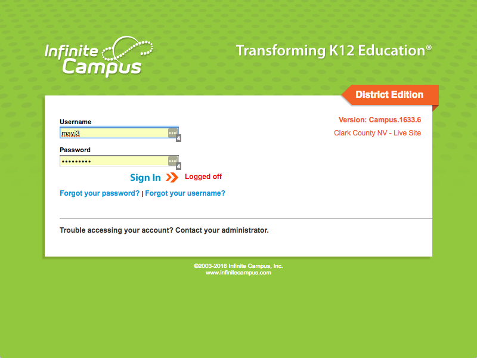
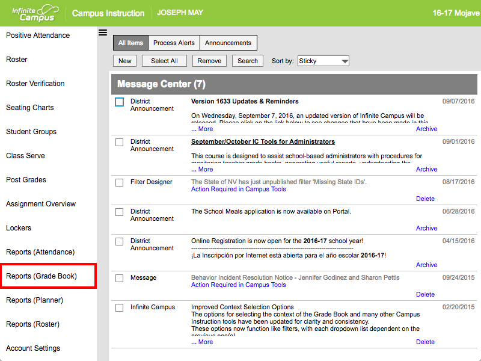
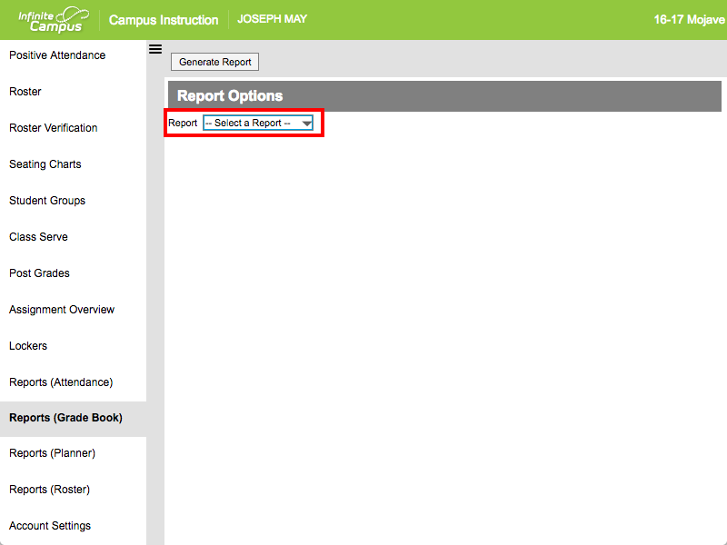
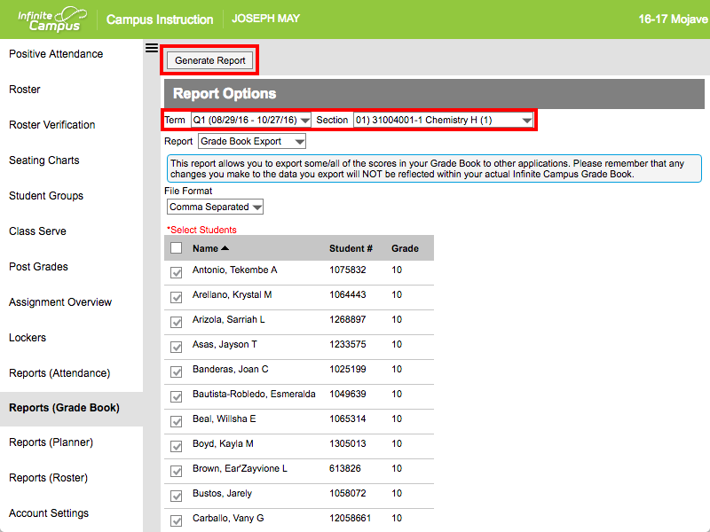
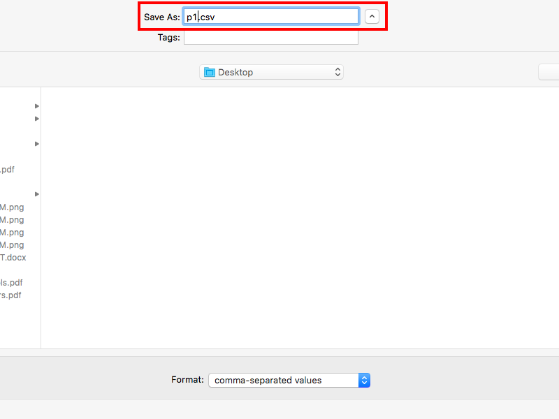
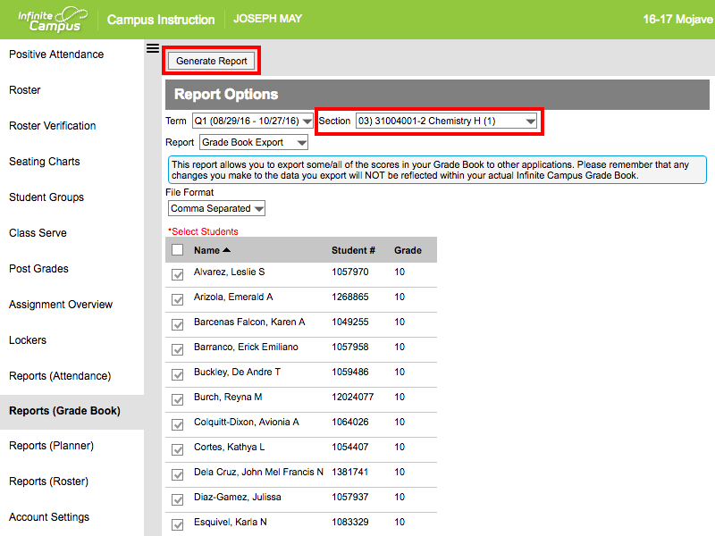

Export Grade Books from Infinite Campus
The instructions below will guide you through the process of exporting your grade book files from Infinite Campus.
- Login to Infinite Campus 
- Select Reports (Grade Book) from the left-hand navigation column 
- Use the Report dropdown to select Grade Book Export 
- Check to make sure you have the correct Term and Section selected, then click the Generate Report button 
- Save the file to your computer using the filename pX.csv, where X is the period number 
- Repeat step 4 changing the Section to the next class period to export 
-
Repeat step 5 using the same naming convention (pX.csv) changing X
to the new class period